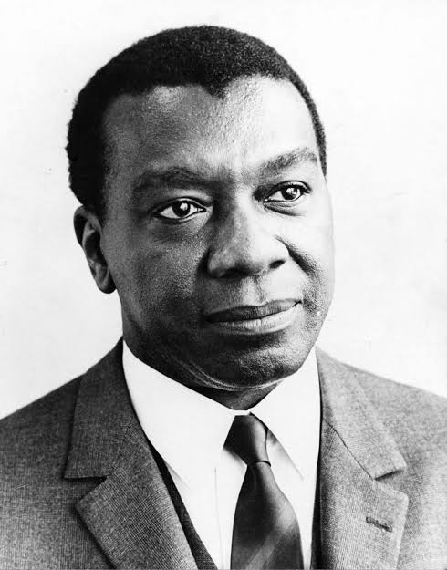

Infância na Bahia
Nasce em 3 de maio, em Brotas de Macaúbas, na região da Chapada Diamantina. Filho de professores primários, aprende desde cedo a valorizar a educação.
Consciência Negra · CEPJSS
A trajetória de Milton Santos, um dos maiores geógrafos brasileiros, que transformou a maneira de compreender o espaço, as cidades e as desigualdades.

Para Milton Santos, a Geografia não deveria apenas descrever paisagens. Ela precisava investigar como a sociedade organiza e transforma os lugares — e como o poder, a economia, a tecnologia e as desigualdades aparecem no espaço onde vivemos.
Da Chapada Diamantina às universidades do mundo, sua história foi marcada pelo estudo, pela coragem intelectual e pela defesa de uma Geografia crítica.
Nasce em 3 de maio, em Brotas de Macaúbas, na região da Chapada Diamantina. Filho de professores primários, aprende desde cedo a valorizar a educação.
Conclui o curso de Direito na Universidade Federal da Bahia (UFBA), mas escolhe construir sua carreira na Geografia, área pela qual já era apaixonado.
Conclui o doutorado em Geografia na Universidade de Estrasburgo. Sua pesquisa e seus estudos ampliam o olhar sobre as cidades e as relações sociais.
Após o golpe militar, é preso e passa a viver fora do Brasil. Durante 13 anos, ensina e pesquisa em diferentes países, como França, Estados Unidos, Canadá e Venezuela.
Volta ao país e retoma sua atuação acadêmica. Continua desenvolvendo ideias que renovam a Geografia brasileira.
Ingressa como professor titular na Universidade de São Paulo, onde forma estudantes e desenvolve parte importante de sua produção intelectual.
Recebe o Prêmio Internacional de Geografia Vautrin Lud, uma das mais importantes premiações da área e frequentemente chamada de “Nobel da Geografia”.
Falece em 24 de junho, em São Paulo. Sua obra continua influenciando pesquisadores, professores e estudantes.

As ideias de Milton Santos ajudam a perceber que os lugares não são neutros: eles refletem decisões, relações de poder, oportunidades e desigualdades.
É formado pela relação entre a sociedade e a natureza, incluindo objetos construídos pelas pessoas e as ações realizadas no território.
SOCIEDADE + TERRITÓRIOMilton analisou como a integração mundial pode aproximar lugares, mas também ampliar desigualdades e concentrar poder e riqueza.
MUNDO CONECTADOConceito que explica como ciência, tecnologia, informação e técnicas passam a organizar cada vez mais o espaço e a vida cotidiana.
TÉCNICA + INFORMAÇÃONas cidades, existem circuitos econômicos diferentes e interligados: um mais moderno e capitalizado e outro ligado a atividades de menor escala e renda.
CIDADE + ECONOMIAMilton Santos publicou mais de 40 livros, além de artigos, entrevistas e outros trabalhos. Estas são algumas de suas obras mais conhecidas.
Defende uma Geografia crítica, capaz de compreender o espaço a partir das relações sociais.
Apresenta a teoria dos dois circuitos da economia urbana nos países em desenvolvimento.
Uma de suas obras centrais, na qual aprofunda sua compreensão do espaço geográfico.
Analisa criticamente a globalização e apresenta a possibilidade de construir um mundo mais humano.
Milton Santos foi um intelectual negro de reconhecimento internacional em uma época em que a presença de pessoas negras em posições de destaque na universidade era muito menor. Sua trajetória enfrentou barreiras e preconceitos, mas sua produção científica conquistou respeito no Brasil e no mundo.
Estudar sua história no contexto da Consciência Negra é reconhecer a contribuição da população negra para a ciência, a educação e o pensamento brasileiro — e refletir sobre a importância de oportunidades iguais.
Seu legado mostra que conhecimento também é uma forma de ampliar horizontes e transformar a sociedade.
CENTRO EDUCACIONAL PROFESSOR JOSÉ SEBASTIÃO DOS SANTOS